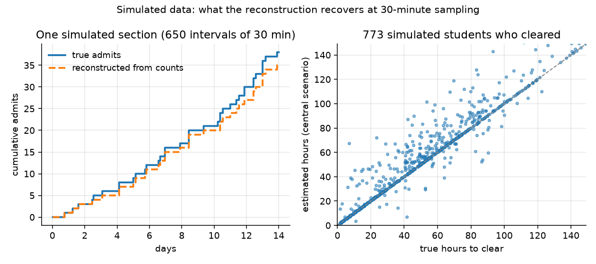

This page explains where the numbers come from and what they cannot tell you. The full write-up with every assumption is in the repository: docs/ASSUMPTIONS.md.
Data
Two sources, and the page says which one it is showing.
This project's own snapshots (Spring 2027). A scraper on GitHub Actions reads the public section pages of classes.berkeley.edu, which carry the enrolled count, capacity, waitlist count and waitlist capacity of every section, and stores one Parquet file per run on the repository's data branch. High-demand sections (a fixed priority list: computer science, data science, statistics, engineering, the large introductory courses in math, economics, physics, chemistry, biology, business and physical education, and the reading and composition courses) are read every 30 minutes; every other section is read about every six hours. Only pages the site's robots.txt allows are requested, at one request per second. Collection for Spring 2027 starts when Phase 1 opens on Oct 26, 2026.
Berkeleytime's public history (Fall 2026). Until Spring 2027 waitlists start clearing, the estimates come from the Fall 2026 enrollment cycle as recorded by Berkeleytime, which polls the same counts and serves each section's history through its public API. That history is the run-length form of Berkeleytime's poll (from March 22, 2026 to the end of the term; every 15 minutes from July, every 45 to 130 minutes in the spring); its own outages are treated as gaps, never as stillness, and the share of section-time lost per day is published in the analysis output. One of those outages matters here: Berkeleytime recorded nothing for any section from Aug 19 to Sep 1, 2026, which covers the end of the adjustment period and the first week of instruction. The Fall 2026 numbers therefore describe clearing during Phase 1 and Phase 2 and cannot say how waitlists moved in the first week of class; this project's own Spring 2027 collection is what closes that hole. These numbers are labelled from Berkeleytime's public history on the lookup page and are not part of this project's own collection.
Neither source observes student identities or positions: the data are aggregate counts.
From counts to flows
Between two readings of a section, the change in the enrolled and waitlisted counts is split into admits from the waitlist, joins, drops from the waitlist, direct enrolments and drops from enrolment, under the rule that a seat cannot go to a newcomer while someone is queued. Events that cancel within one interval are invisible, so every flow is a lower bound. On simulated waitlists sampled every 30 minutes the reconstruction recovers about 91% of admits and 96% of joins, and every interval containing a single event exactly.

From flows to odds
For each section and each sampled moment at which a waitlist could be joined (a queue exists, or the section is full), hypothetical students are placed at positions 1, 2, 3, 5, 7, 10, 15, 20, 30, 40, 60 and 100 of the queue as it stood then. Each moves up by one place per admit ahead of them; a waitlist drop moves them up with the probability that the dropped student was ahead (the "central" scenario; the analysis also computes the best and worst cases, in which every drop was ahead or behind). The time until the hypothetical student reaches the front is the outcome; if the data ends, the section vanishes, or a collection gap intervenes first, the outcome is censored, which survival analysis handles correctly.
The headline number is the Kaplan-Meier estimate of having cleared within the time you have left: the page counts the days from today to the last automatic waitlist run of the term and reads the curve for your course and position there, with a 95% interval from resampling sections. A second line gives the share cleared by the first day of instruction, because most clearing happens after classes begin. The curve is the department's for that position bucket, with the course's own number of cases shown next to it: in the Fall 2026 backtest, curves fitted per course predicted held-out students no better than the department's (worse across time, indistinguishable across held-out courses), so course-level curves wait for a second cycle. Across the shift from Phase 1 to Phase 2 even the department curve predicted slightly worse than the position bucket alone (Brier 0.308 against 0.291 at 14 days), because clearing sped up for everyone once Phase 2 opened; within one phase the department adds a little. Read the department curve as a description of how that department's waitlists moved, and the position bucket as the part that carries over. A department with fewer than 30 cases at that position falls back to all courses and says so; when your horizon is longer than the data followed anyone, the page says so and shows the value it can support as a floor. A Cox proportional-hazards model relates the clearing rate to position, list length relative to capacity, course level, department, enrollment phase and days remaining before instruction; its assumptions are checked and reported in the analysis output.
How the estimates are tested
The model is frozen on one set of hypothetical joiners and scored on another it has not seen: joiners after a date against joiners before it (with the earlier joiners' outcomes cut off at that date, so nothing later leaks in), courses held out as a group, and, once two cycles exist, one term against the next. Every test row is scored at its own horizon with inverse-probability-of-censoring weights, so joiners whose outcome was still unknown at that horizon are neither dropped (which would keep the fast clearings and lose the slow ones) nor counted as failures. The reports compare four predictors: the position bucket alone, the course-and-bucket curve this page uses, the literal number this page would have shown, and the Cox model; they are in reports/backtest_<term>/ in the repository.
What this cannot tell you
- Reserved seats break strict queue order: a section can hold seats for a category you are not in, and its waitlist can stand still while seats are open.
- Departments process some waitlists by hand and the registrar runs the automatic process in batches, so time to clear includes processing delay.
- Estimates describe one past cycle. Policies, capacities and demand change between terms; the Fall 2026 numbers stand in for Spring 2027 until this project's own data exist.
- Small courses give noisy numbers; the sample size and the interval are printed with every estimate for that reason.
Reproducing the numbers
Everything is public: the scraper, the snapshots, the reconstruction, the models and this page. make analysis TERM=2272 in the repository rebuilds every table, figure and the JSON behind this page from the raw Parquet files; make backfill-analysis TERM=2268 does the same from the Fall 2026 history, and make backtest writes the test reports. The claims and the commands that verify them are in CLAIMS.md.